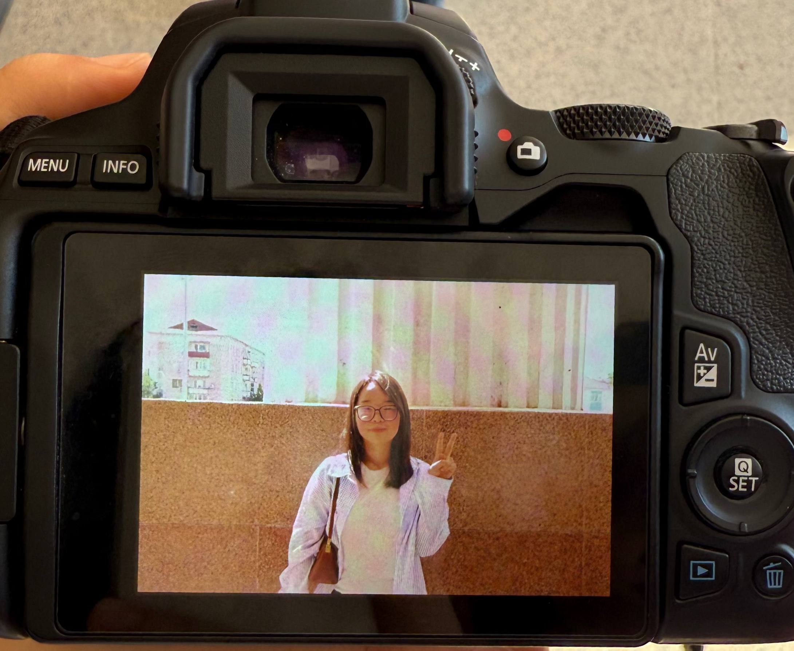

Короче, ты мне нравишься с самой первой встречи, когда вы с Ануарбек агай постучали в огрооомный каб с ~10 компами, где я сидела одна. Мне в тебе нравилось то, что ты одновременно можешь быть и listener, и talker. Мне всегда нравились и казались интересными твои рассказы про колледж, практику и тптд.
Мне нравился твой вайб, вкус в музыке и вообще всевсевсе. Знал бы ты, как я была в шоке, когда ты вдруг после очередной истории сказал, что уезжаешь в Австрию😭😭 Я не понимаю, это привычка такая у парней, вот так делать вбросы, по типу «Девочки, я увольняюсь» (Ануар агай) или ты «А вы знали что я в Австрию уезжаю?».
Я люблю, когда заканчиваю дела быстро, чтобы опустошить свой to-do list, и спокойно отдыхать. Но, с недавних пор, у меня стоит таск/выбор/ я нахожусь в какой думке «признаться или нет? Может у него вообще есть девушка(?)». Ну короче я решила выбрать первое. (отсылка на первый параграф) Во всяком случае, мне нравиться твой инст, как ты показываешь Европу и тптд. Надеюсь, у тебя все будет хорошо! 🤍